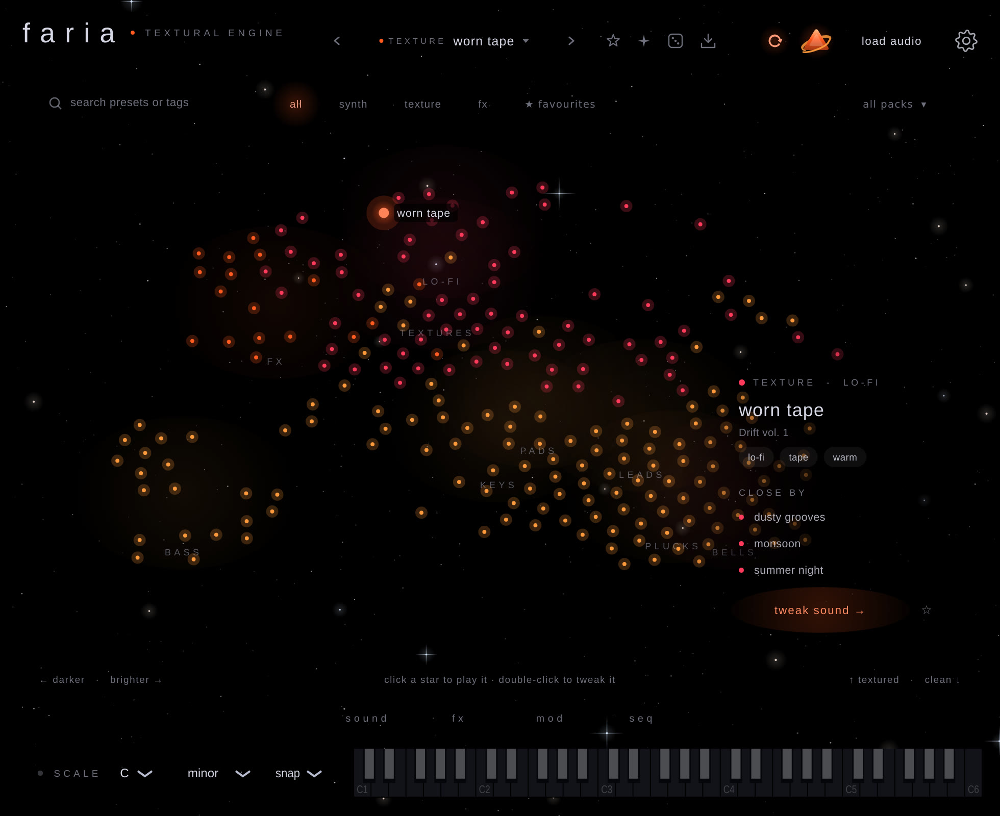
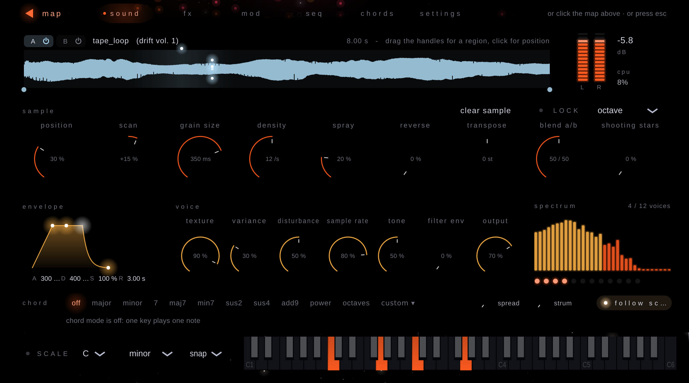
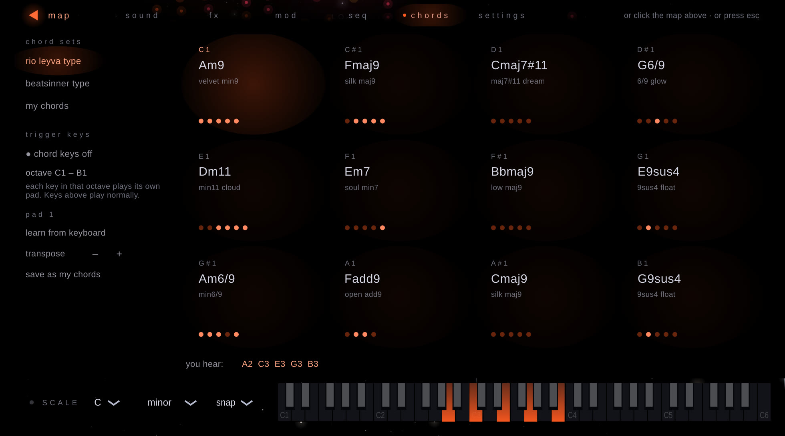
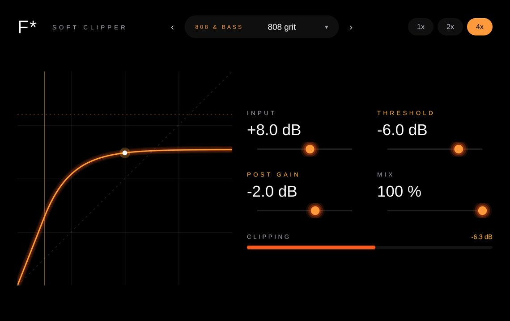

A granular synth where every sound is a star. Click one and play.
Free · Mac · AU · VST3 · Standalone · Beta

● what it does
Every preset is a star. Dark sounds on the left, bright on the right, similar sounds close together. Click to listen, double-click to tweak.
Press it and Faria makes a brand-new sound — bells, keys, bass, pads, drones, wind, glitch. Offline, and different every time.
Twelve pads, one key each. Lush 9ths and dark minor sets built in, or learn your own from the keyboard.
Every sample is one tuned note and the tape drift moves all notes together, so any preset plays clean chords.
Two tempo-synced LFOs, a macro and a step sequencer drawn as a constellation. Sounds that pulse and breathe on their own.
Drop in a voice memo, a loop or one note. Play it as a cloud of grains, or lock it into a clean, in-tune sampler.


● sounds
Every sound is synthesised from scratch. Use them in your own music — no credit needed.
● also by faria audio
soft clipper
Makes drums, 808s and whole beats louder without going over 0 dB. One smooth curve in the style of FL Studio’s soft clipper, with input, threshold, post gain, mix and up to 4x oversampling.
29 presets: drums, 808 & bass, master, vocals, creative and underground.

One zip with the installer, all eight sound packs and the manual. Faria is still in beta — new versions come out here.
Download Faria for Mac Opens the download page on GitHub · always the newest versionWorks with
Ableton Live, Logic, GarageBand and any Mac DAW that loads AU or VST3.
Needs
macOS 11 or newer. Apple Silicon and Intel.
First time
Mac says "unidentified developer"? Right-click the installer and choose Open. "Read me first" explains it.
feedback
Both plugins are works in progress. A bug, a sound you love or hate, a preset you miss, something that’s confusing — every message helps make them better. It takes a minute and you don’t need an account.